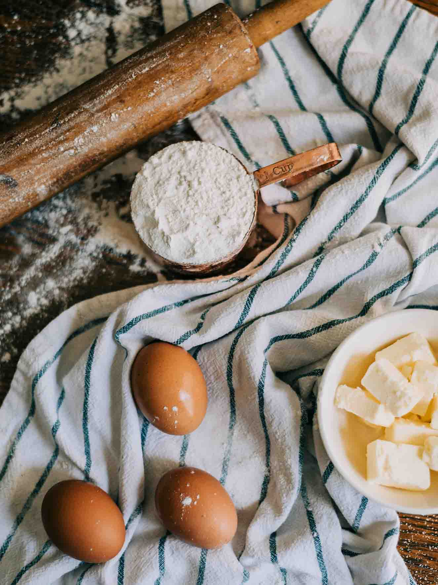
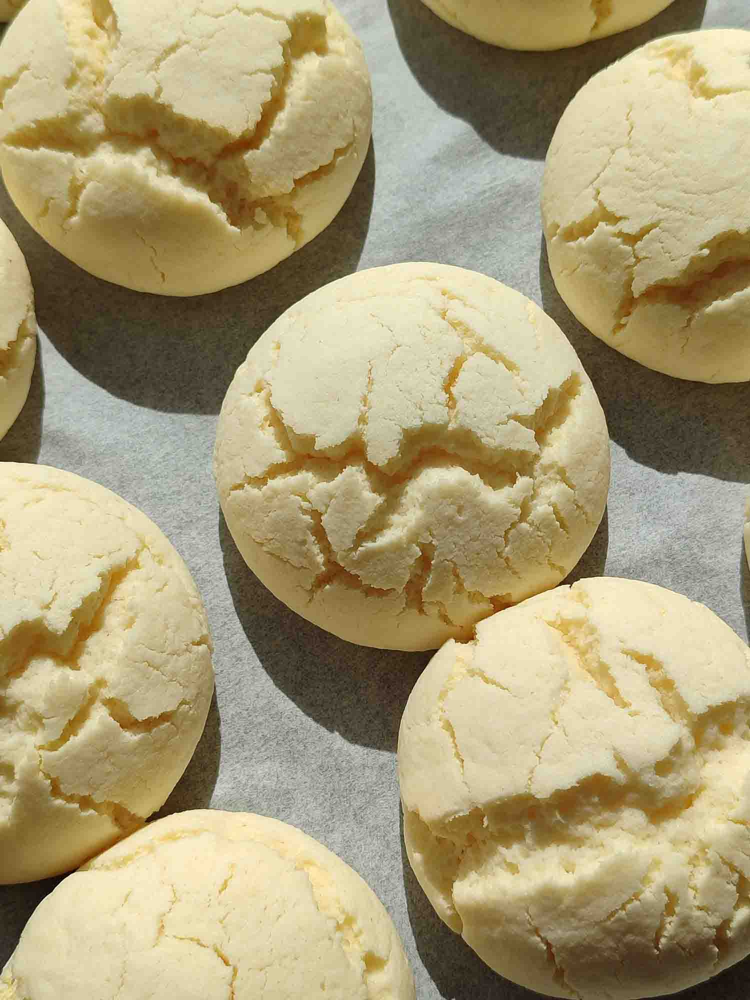
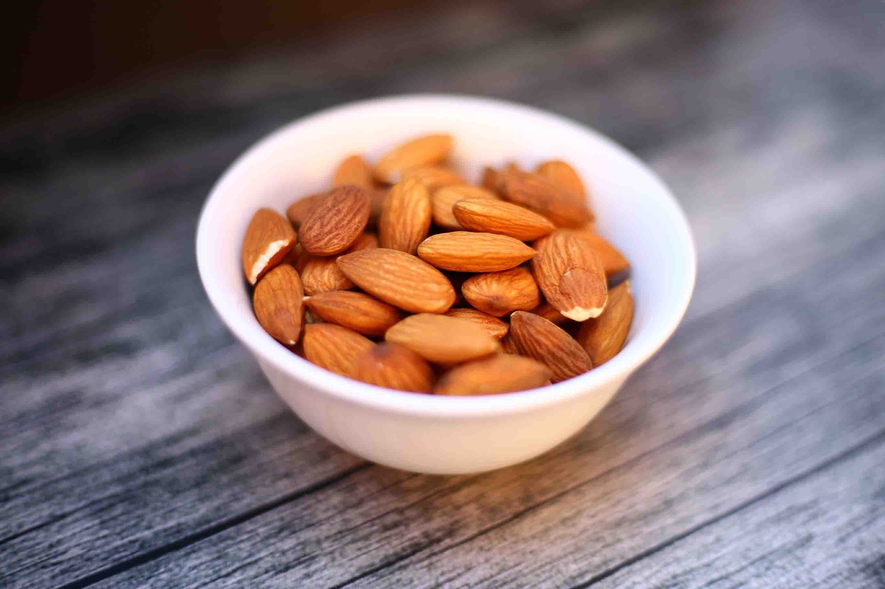
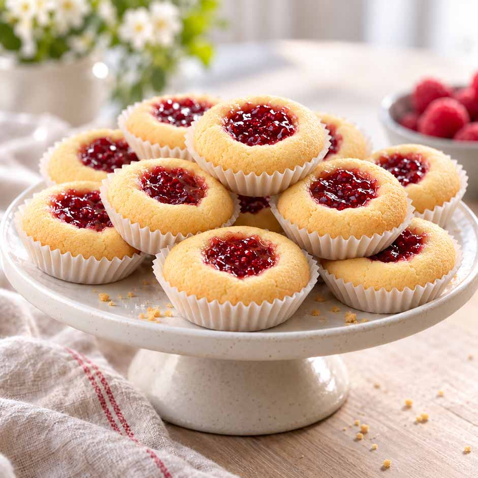
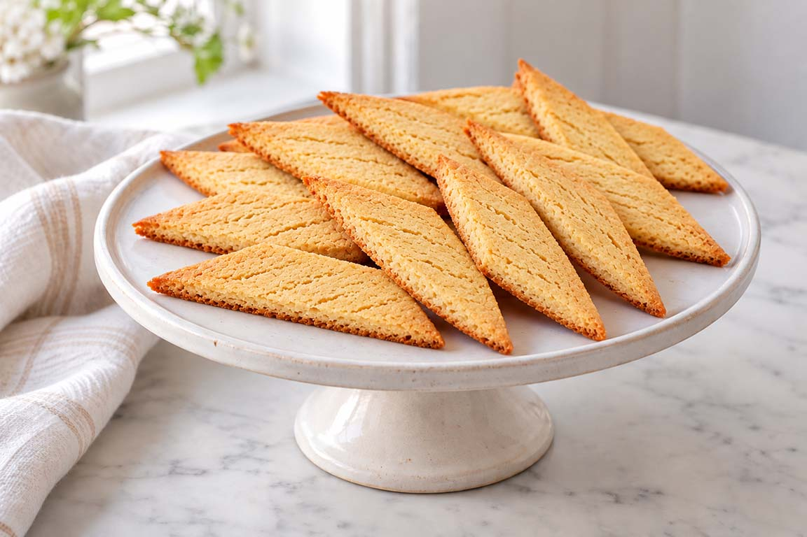
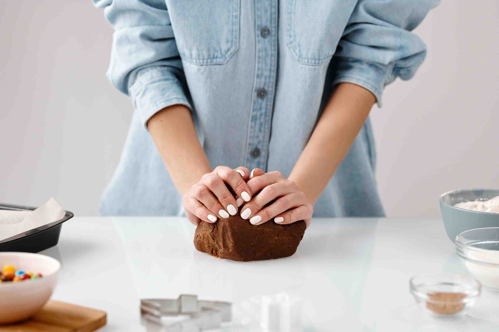
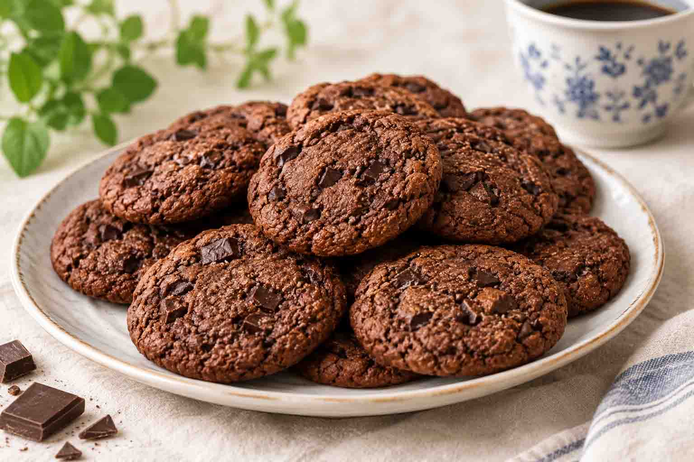
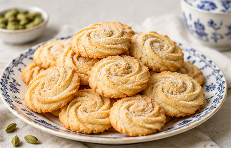

Att bjuda på sju sorters kakor är en klassisk svensk fikatradition och syftar på det minsta antalet kaksorter som etiketten tidigare föreskrev att kakfatet ska innehålla. Tanken är att erbjuda ett varierat urval av småkakor så att det finns något för olika smaker: spröda, mjuka, chokladiga, kryddiga och fruktiga kakor. Utöver småkakorna serveras även vetebröd och och tårta. Traditionen förknippas ofta med kafferep och högtider men passar lika bra till vardagsfika eller kalas och har funnits sedan 1800-talet.
På den här sidan finns recept på sju småkakor att prova på!
Drömmar är mycket spröda småkakor med mild vaniljsmak som är lätta att baka. Hjorthornssalt gör att kakorna får sin karakteristiskt porösa och ljuvligt frasiga konsistens.

Finska pinnar är spröda mördegskakor med mandel och pärlsocker på toppen. Trots namnet är de en välkänd klassiker på svenska kakfat.
ca 1 dl hackad sötmandel och 2 msk pärlsocker

Hallongrottor är mördegskakor med en liten grop fylld med ljuvlig hallonsylt. De är både enkla att baka och uppskattade på kakfatet.

Kolasnittar är avlånga lite sega småkakor med smak av sirap och vanilj. De skärs i sneda bitar direkt när de kommer ut ur ugnen.

Schackrutor är klassiska småkakor med ett dekorativt rutmönster av ljus och chokladsmakande mördeg. Kakorna blir spröda och ser mycket läckra ut på kakfatet. De imponerar med sitt utseende men är väldigt enkla att baka.

Chokladkakor är spröda och lite sega kakor med härlig chokladsmak. Perfekta till kaffet eller när du vill bjuda på något riktigt gott.

Kardemummakakor är spröda, smöriga småkakor med en mild och aromatisk smak av kardemumma. En klassisk fikakaka som passar året om!